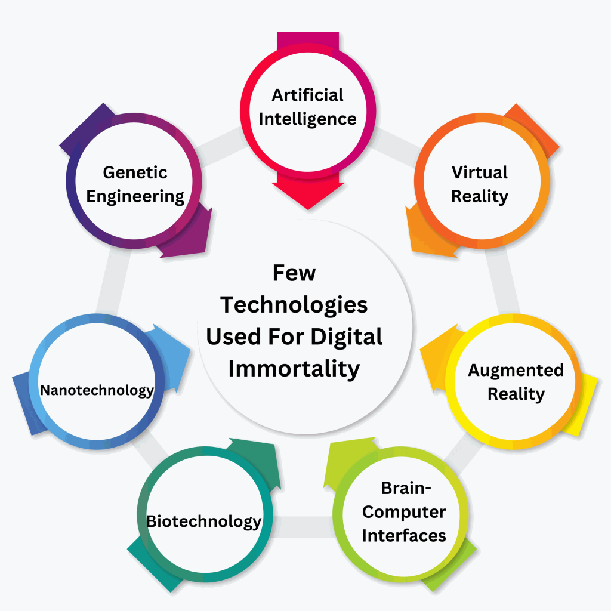

Technology: How AI Recreates Voices and Personalities
Today's technology can do some amazing things—including bringing a person's voice and personality back to life after they've passed away. Using AI (artificial intelligence), computers can study a person's old videos, voice recordings, messages, and social media posts. From this information, AI learns how that person talked, what words they used often, how they expressed emotions, and even their sense of humor.
With this data, AI can create a chatbot that "talks" like the person, or a voice clone that sounds just like them. In some cases, people can wear VR headsets or watch holograms to see and interact with digital versions of their loved ones. It's not magic—it's a mix of powerful tools like machine learning, natural language processing, and deepfake technology. These tools work together to recreate a digital version that feels familiar and emotionally real.
This technology can bring comfort, but it also raises important questions about how we use it, and who gets to decide.
Technologies Behind Digital Afterlife
- Artificial Intelligence (AI): The "brain" behind it all—AI learns how a person spoke, behaved, and expressed themselves by analyzing their past data.
- Machine Learning: A type of AI that helps computers "learn" from emails, texts, videos, and more, to imitate how someone thinks and talks.
- Natural Language Processing (NLP): This helps the AI understand and respond to human language—making conversations with a chatbot feel natural and real.
- Voice Cloning: Technology that copies someone's voice using recordings, allowing the digital version to "speak" in the person's real voice.
- Deepfake Technology: Uses AI to create realistic moving images or videos of people—even after they've passed away.
- Chatbots: Programs that simulate conversation, trained using a person's past messages or writing style.
- Virtual Reality (VR): With a headset, VR creates a 3D environment where you can "meet" a digital version of a loved one.
- Holograms: 3D projections that make it look like a person is standing and moving in front of you, even if they're not really there.
- Speech-to-Text & Text-to-Speech Tools: These convert spoken words into text and vice versa—important for building realistic conversations.
- Cloud Storage & Big Data: Stores large amounts of personal data (photos, messages, videos) that AI uses.
